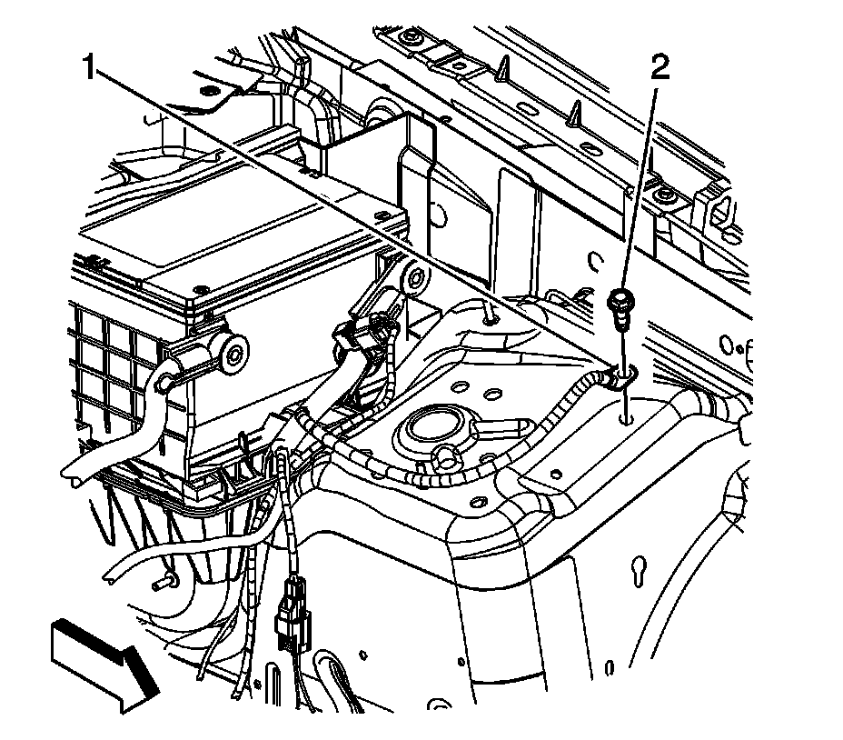
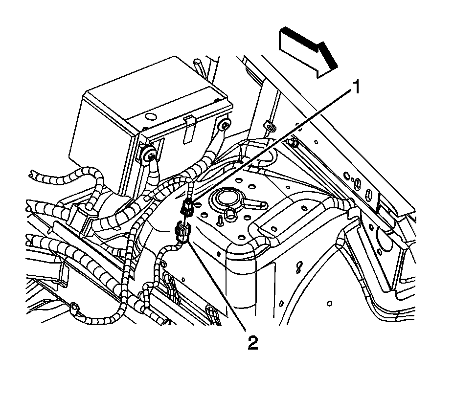
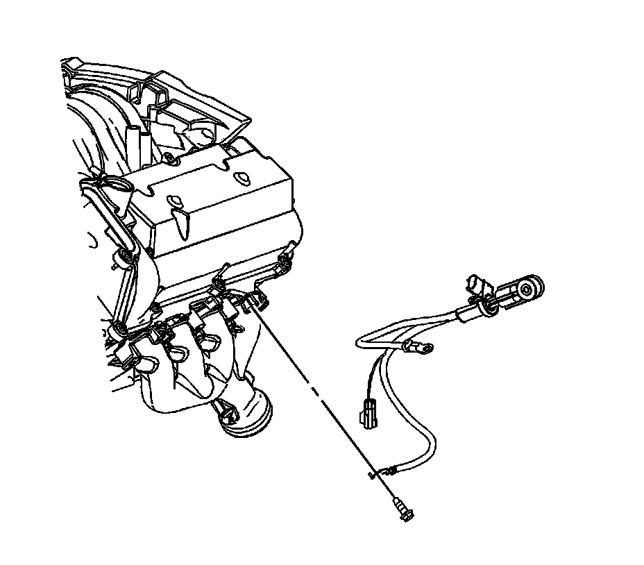

Battery Negative Cable Replacement (RHD)
Battery Negative Cable Replacement (LH2 (RHD))
Removal Procedure
Important:
* Always use replacement cables that are of the same type, diameter and length of the cables that you are replacing.
* Always route the replacement cable the same way as the original cable.

1. Disconnect the negative battery cable. Refer to Battery Negative Cable Disconnection and Connection (LHD) (Service and Repair)Battery Negative Cable Disconnection and Connection (RHD) (Service and Repair) .
2. Remove the negative battery cable ground bolt (2).

3. Disconnect the instrument panel (I/P) wiring harness electrical connector (2) from the battery current sensor (1).

4. Disconnect the I/P wiring harness electrical connector (2) from the negative battery cable electrical connector (1).

5. Remove the negative battery cable ground bolt from the cylinder head.
6. Remove the negative battery cable from the vehicle.
Installation Procedure
1. Install the negative battery cable to the vehicle.
Notice: Refer to Fastener Notice (Fastener Notice) .
2. Position the negative battery cable to the cylinder head and install the ground bolt.
Tighten the bolt to 45 N.m (33 lb ft).
3. Connect the I/P wiring harness electrical connector (2) to the negative battery cable electrical connector (1).
4. Connect the I/P wiring harness electrical connector (2) to the battery current sensor (1).
5. Position the negative battery cable and install the negative battery cable ground bolt (2).
Tighten the bolt to 20 N.m (15 lb ft).
6. Connect the negative battery cable. Refer to Battery Negative Cable Disconnection and Connection (LHD) (Service and Repair)Battery Negative Cable Disconnection and Connection (RHD) (Service and Repair) .